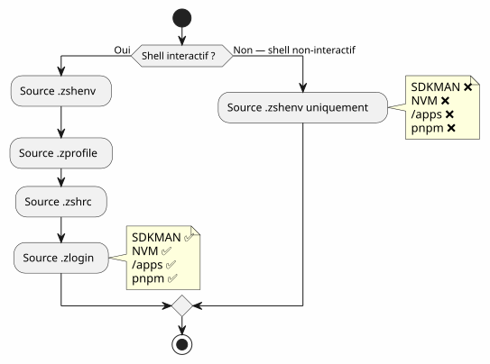

OpenCode and the incomplete PATH: why your tools weren't in the agent's shell
Published on 21 April 2026
- The scene: a blind agent in a world of tools
- Anatomy of the bug: two shells, two worlds
- The culprits: .zshrc vs .zshenv
- Step-by-step diagnostic
- The solution: .zshenv + the right paths
- The NVM case: when the version manager forgets to leave a trace
- Summary table of paths
- Pitfalls and mitigations
- Lessons learned
- Final verification
- Links
You launch OpenCode in your terminal, everything works. The agent attempts a`gh`— not found. One`java -version`— absent. A`node`— nowhere. Yet, these tools are right there in your shell. The problem? OpenCode launches shellsnon-interactivewho never read your`.zshrc`. Here’s how to diagnose and fix it properly.
- tic
-
[]
The scene: a blind agent in a world of tools
It was a Tuesday evening. I had just installedhttps://opencode.ai[OpenCode], the AI agent that promised to transform my way of coding. First test: ask him to list my GitHub repositories.
$ opencode
> Utilise gh pour lister mes repos
❌ bash: gh: command not foundStrange.`gh`worked perfectly in my terminal. I’m trying something else:
> Vérifie la version de Java
❌ bash: java: command not foundThen:
> Lance le build Gradle
❌ bash: gradle: command not foundJava, Gradle, Node,gh— everything was invisible to the agent. My terminal, on the other hand, saw everything. As if the agent and I lived in two parallel worlds.
It took me hours to understand. Hours of`echo $PATH`, de which java, of growing frustration. I ended up realizing that the problem wasn’t the tools—it was theshell. OpenCode, like any agent that launches subprocesses, works in shellsnon-interactive. And Zsh, in these shells, simply and purely ignores your`.zshrc`.
What follows is the full account of this diagnosis, the resolution, and the lesson I learned. If you use an AI agent — OpenCode, Aider, Cursor, or even cron scripts — this problem will affect you at some point.
Anatomy of the bug: two shells, two worlds
When you open a terminal, Zsh treats it as a shellinteractive. He loads`.zshrc`, which initializes everything: SDKMAN, NVM, pnpm, the aliases, your nice prompt. Your environment is complete.
But when OpenCode runs a command, it does not launch an interactive terminal. It launches a shellnon-interactive— a task shell, without a human behind the screen. And Zsh, in this context, jumps`.zshrc`. He only reads`.zshenv`.
Why does this distinction exist? Because a non-interactive shell is designed to run scripts, not to serve a human user. Loading aliases, the prompt, and completions in a script running in the background would be a waste. The problem is that your PATH — the most critical information for finding executables — is often initialized in`.zshrc`, not in`.zshenv`.
Failed to generate image: PlantUML preprocessing failed: [From <input> (line 6) ] @startuml skinparam backgroundColor #FEFEFE actor "You" as user actor "OpenCode\n(agent)" as agent participant "Shell ^^^^^ Syntax Error? (Assumed diagram type: sequence) @startuml skinparam backgroundColor #FEFEFE actor "You" as user actor "OpenCode\n(agent)" as agent participant "Shell interactive (.zshrc sourced)" as ishell participant "Shell non-interactive (.zshrc ignored)" as nshell user -> ishell : gh, java, node ✅ agent -> nshell : gh, java, node ❌ note right of ishell Source .zshrc : - SDKMAN init - NVM init - ~/apps dans PATH - pnpm dans PATH end note note right of nshell .zshrc ignoré ! PATH = /usr/bin:/bin + quelques répertoires défaut end note @enduml
The root of the problem:Zsh sources .zshrc only for interactive shells. OpenCode, like any AI agent that launches subprocesses, uses non-interactive shells. These shells only read`.zshenv`.
The culprits: .zshrc vs .zshenv
Zsh hasfour initialization files, each with a precise role. It’s an elegant design — but it’s also the crux of the problem:
File |
Sourced when |
Role |
Modify the PATH? |
|
Always(interactive + non-interactive + login) |
Essential environment variables, PATH |
�✅ Yes — it’s SA’s place |
|
Login shells only |
Slow commands (once per session) |
Possible |
|
Interactive shells only |
Alias, prompt, completion, interactive tools |
❌ Not for critical variables |
|
Login shells (after .zshrc) |
Welcome messages, finalization |
Rarely |
The table gives a clue, but you need to understand it in depth. Think of it like the rooms of a house:
-
`.zshenv`is theentrance hall— everyone passes through there, visitor or resident. If you put something here, any shell will be able to see it.
-
`.zshrc`is theliving room— only the residents (interactive shells) go in there. Visitors (non-interactive shells) remain in the hall.
-
.zprofileet `.zlogin`are specialized pieces for login shells (like when you connect via SSH).
The tragedy is that most of us put the PATH in the living room. And the AI agent, meanwhile, is never allowed to go in.
The problem in a diagram:

When you open a terminal, Zsh is interactive: it reads`.zshrc`, everything works. When OpenCode launches a shell to execute a command, Zsh is non-interactive: it skips`.zshrc`, only reads`.zshenv`. Et si `.zshenv`does not exist or does not contain the PATH — it’s the desert.
|
Why does Zsh do that?It is a design choice inherited from Unix. A non-interactive shell must befast et reproducible. Loading aliases, colored prompts, and heavy SDKMAN initializations into a cron script or an AI agent would be slow and fragile. Therefore, the separation makes sense :`.zshenv`essentially (variables, PATH)`.zshrc`for comfort (aliases, prompt, we complete). The problem arises when we put the essential in comfort. |
Step-by-step diagnostic
Before correcting, you need to understand exactly what is missing. Here is a reproducible diagnostic method — keep it in your bookmarks if you work with AI agents.
1. Check the agent’s PATH
We compare what your interactive terminal sees with what a non-interactive shell sees — i.e., what OpenCode sees.
# Dans votre terminal interactif (tout fonctionne)
echo $PATH | tr ':' '\n' | grep -v '^/usr' | sortTypical result :
/home/cheroliv/apps
/home/cheroliv/.nvm/versions/node/v22.19.0/bin
/home/cheroliv/.sdkman/candidates/java/current/bin
/home/cheroliv/.sdkman/candidates/gradle/current/bin
/home/cheroliv/.local/share/pnpm
/home/cheroliv/.local/binNow, let’s simulate what the agent sees — a non-interactive shell:
# Shell non-interactif : pas de .zshrc
zsh -c 'echo $PATH' | tr ':' '\n' | grep -v '^/usr' | sortResult :
/home/cheroliv/.local/binFive out of six paths have disappeared.The agent is amputated of 83% of its environment. It’s as if you were asked to cook without half of your utensils — you could boil water, but not much else.
|
The command`zsh -c 'echo $PATH'`is yourdiagnostic tool number 1. If a tool you use daily is missing from the result, your AI agent will not be able to see it either. Test it before and after each modification of`.zshenv`. |
2. Identify what is in .zshrc but not in .zshenv
Now, we are looking for the culprit in`.zshrc`. We filter the lines that mention our tools:
grep -n 'apps\|SDKMAN\|NVM\|PNPM\|PATH' ~/.zshrcTypically found:
119: PATH="/usr/bin/python3:$HOME/apps:$PATH" # ← pas exporté !
171: export NVM_DIR="$HOME/.nvm"
172: [ -s "$NVM_DIR/nvm.sh" ] && \. "$NVM_DIR/nvm.sh" # ← NVM init
176: nvm use --lts --silent # ← active une version
179: export PNPM_HOME="/home/cheroliv/.local/share/pnpm"
187: export SDKMAN_DIR="$HOME/.sdkman"
188: [[ -s "$HOME/.sdkman/bin/sdkman-init.sh" ]] && source "$HOME/.sdkman/bin/sdkman-init.sh"All that isinvisiblefor OpenCode. And the`PATH`of line 119 isn’t even`export`é — it never leaves the current shell. This is a crucial technical detail: a variable without`export`remains local to the shell that defines it. Subshells — such as those launched by OpenCode — never inherit it.
3. Check if .zshenv exists
cat ~/.zshenv 2>/dev/null || echo "FICHIER ABSENT"If the answer is « FILE MISSING », that’s where it all comes down to.
The solution: .zshenv + the right paths
The strategy is simple, but it requires precision: putting in`.zshenv` onlythe essential paths, without sourcing the heavy initialization scripts. We do not move`.zshrc`in`.zshenv`—we extract the essentials.
Create .zshenv with all the essential paths
`.zshenv`is theonly filethat Zsh guarantees to source inallthe contexts. This is where PATH should go.
export SDKMAN_DIR="$HOME/.sdkman"
export NVM_DIR="$HOME/.nvm"
export PNPM_HOME="$HOME/.local/share/pnpm"
export PATH="$HOME/apps:$HOME/.sdkman/candidates/java/current/bin:$HOME/.sdkman/candidates/gradle/current/bin:$HOME/.nvm/current/bin:$PNPM_HOME:$HOME/.local/bin:$HOME/.local/share/JetBrains/Toolbox/scripts:/usr/bin/python3:$PATH"|
One uses`$HOME/.nvm/current/bin`and not`$HOME/.nvm/versions/node/v22.19.0/bin`. The reason: Node versions change. A hardcoded path becomes wrong at the next`nvm install`. More details in the following section. |
Why not source sdkman-init.sh in .zshenv?
The most tempting approach would be simply to reproduce in`.zshenv`what we do in`.zshrc`— source the initialization scripts. Oncouldto be tempted to do
# ❌ MAUVAISE IDÉE
[[ -s "$HOME/.sdkman/bin/sdkman-init.sh" ]] && source "$HOME/.sdkman/bin/sdkman-init.sh"Problems:
-
slow:`sdkman-init.sh`Performs network resolutions and checks at each shell. In a non-interactive shell, that is an unnecessary cost.
-
FragileSDKMAN expects an interactive context. Its initialization may fail silently in a pipe or a subshell.
-
Useless: SDKMAN places its candidates in`~/.sdkman/candidates/<tool>/current/bin`— stable symlinks pointing to the active version. They can be useddirectly.
The right approach: bypass SDKMAN initialization and point directly to the symlinks`current`. This is the key to the whole solution :using the file structure as a contract, rather than the initialization code.
Failed to generate image: PlantUML preprocessing failed: [From <input> (line 5) ]
@startuml
skinparam backgroundColor #FEFEFE
rectangle "Slow approach
(source sdkman-init.sh)" as slow {
^^^^^
Syntax Error? (Assumed diagram type: activity)
@startuml
skinparam backgroundColor #FEFEFE
rectangle "Slow approach
(source sdkman-init.sh)" as slow {
card ".zshenv source sdkman-init.sh
2-3 seconds per shell
Network checks
Risk of failure" as s1 #FDEDEC
}
rectangle "Fast Approach
(direct symlinks)" as fast {
card ".zshenv export PATH=...current/bin\n0 ms\nNo network\nNo initialization" as s2 #E8F8E8
}
slow --> fast : Même résultat final\nLe PATH pointe sur current/bin\ndans les deux cas
@enduml
The NVM case: when the version manager forgets to leave a trace
The NVM problem
This is where the investigation led me the farthest. SDKMAN has an elegant design: when one does`sdk install java 25.0.2-tem`, it creates a symlink :
~/.sdkman/candidates/java/current -> ~/.sdkman/candidates/java/25.0.2-temThis symlink isalways up to date. Point to it in`.zshenv`and you are covered, no matter what shell. Beautiful.
NVM, he does not createnothingof such. No symlink`current`. No stable anchor point. We need to point to a hard-coded versioned path, which looks like this:
~/.nvm/versions/node/v22.19.0/bin/nodeAt the next`nvm install 24`, this path is dead. Your`.zshenv`It will point to a version that is no longer the active version. It’s a time bomb.
|
Why does NVM do that?NVM works by dynamically modifying the PATH each`nvm use`. It is designed for developers who often change version, in an interactive shell. The symlink`current`was not in the initial specifications — it’s a design oversight that we will fix ourselves. |
The solution: create the symlink current for NVM
Since NVM doesn’t do it, we do it ourselves. The principle is the same as SDKMAN — a symlink`current`that always points to the active version. We create it once, then we automate it so that it updates itself.
# Créer le symlink initial
ln -sfn "$HOME/.nvm/versions/node/v22.19.0" "$HOME/.nvm/current"Now, in`.zshenv`, we use:
$HOME/.nvm/current/binRather than:
# ❌ Chemin en dur — cassé au prochain changement de version
$HOME/.nvm/versions/node/v22.19.0/binAutomate the symlink update
A symlink is worth nothing if it doesn’t get updated. The symlink`current`must update itself when we do`nvm use` ou nvm install. The solution: awrapper— a function that wraps the real command`nvm`and updates the symlink after each call.
# À la fin de .zshrc, APRÈS le chargement de NVM
nvm use --lts --silent
ln -sfn "$(nvm_version_path "$(nvm current)")" "$NVM_DIR/current"
_nvm() {
command nvm "$@"
local rc=$?
ln -sfn "$(nvm_version_path "$(nvm current)")" "$NVM_DIR/current"
return $rc
}
alias nvm='_nvm'How does it work, in detail :
Failed to generate image: PlantUML preprocessing failed: [From <input> (line 5) ] @startuml skinparam backgroundColor #FEFEFE actor Développeur participant "nvm wrapper ^^^^^ Syntax Error? (Assumed diagram type: sequence) @startuml skinparam backgroundColor #FEFEFE actor Développeur participant "nvm wrapper (_nvm)" as wrapper participant "nvm real (command nvm)" as realnvm participant "~/.nvm/current\n(symlink)" as symlink Développeur -> wrapper : nvm use 20 wrapper -> realnvm : command nvm use 20 realnvm --> wrapper : version activée wrapper -> symlink : ln -sfn .../v20.16.0 ~/.nvm/current wrapper --> Développeur : retour note right of symlink Toujours à jour ! Utilisé par .zshenv → accessible par OpenCode end note @enduml
The wrapper`_nvm`calls the real command`nvm`, then update the symlink. The alias`nvm='_nvm'`make sure when typing`nvm`, we go through the wrapper. And at shell initialization, we do the same after`nvm use --lts`.
|
`nvm_version_path`is an internal function of NVM that resolves the full path of a version. It avoids having to reconstruct the path manually. |
Summary table of paths
Before moving on to the traps, a visual summary of the transformation. On the left, what you had (everything in`.zshrc`, invisible for the agent). On the right, what you have now (the essential paths in`.zshenv`, visible everywhere).
| Tool | Before (.zshrc only) | After (.zshenv + symlink) | Visible by OpenCode ? |
|---|---|---|---|
|
PATH not exported in .zshrc |
`$HOME/apps`in .zshenv |
�✅ |
SDKMAN Java |
`sdkman-init.sh`sourced in .zshrc |
`$HOME/.sdkman/candidates/java/current/bin`in .zshenv |
✅ |
SDKMAN Gradle |
`sdkman-init.sh`sourced in .zshrc |
`$HOME/.sdkman/candidates/gradle/current/bin`in .zshenv |
�✅ |
NVM Node |
`nvm use --lts`in .zshrc |
`$HOME/.nvm/current/bin`in .zshenv (symlink) |
✅ |
pnpm |
`$PNPM_HOME`in .zshrc |
`$PNPM_HOME`in .zshenv |
�✅ |
JetBrains Toolbox |
Auto-added by Toolbox in .zshrc |
`$HOME/.local/share/JetBrains/Toolbox/scripts`in .zshenv |
✅ |
Python 3 |
`/usr/bin/python3`in PATH .zshrc |
Explicitly in .zshenv |
�✅ |
Pitfalls and mitigations
Not everything is perfect with this approach. Here are the problems I encountered, and how to work around them.
| trap | Description | Mitigation |
|---|---|---|
Duplicated PATH |
If .zshenv and .zshrc add the same path, it appears twice |
`.zshenv`is sourcedbefore.zshrc. Both are read in an interactive shell. The PATH may duplicate. It’s cosmetic, not functional. To avoid this: put only the paths absent from the default PATH in .zshenv. |
NVM: hardcoded version in .zshenv |
Put`~/.nvm/versions/node/v22.19.0/bin`hardcoded becomes false at the next`nvm install` |
Use the symlink`$HOME/.nvm/current/bin`+ the wrapper`_nvm`in .zshrc |
SDKMAN: source sdkman-init.sh in .zshenv |
Slow, fragile, useless in a non-interactive shell |
Use the symlinks`candidates/<tool>/current/bin`directement |
Missing alias after modification |
The wrapper`nvm='_nvm'`in .zshrc only takes effect after reloading |
Restart the shell or`source ~/.zshrc` |
OpenCode does not see the changes |
The agent has already launched its subshells with the old .zshenv |
Restart OpenCode after modifying .zshenv |
.zshenv too loaded |
Put heavy functions or interactive initializations in .zshenv |
.zshenv = environment variables + PATH only. No`source`, no heavy functions, no prompts. |
Lessons learned
-
.zshrc` is interactive,
.zshenvis universal— If a variable must exist in all shells (AI agents, cron, scripts, IDE), it goes in`.zshenv`. The living room is comfortable, but the entrance hall is the only place where everyone passes. -
Version managers are not equal— SDKMAN creates symlinks`current`by design. NVM no. We need to fill this gap manually. It’s an important lesson: before configuring your PATH, check if your manager provides a stable anchor point.
-
Do not source the init scripts in .zshenv—
sdkman-init.shet `nvm.sh`are designed for an interactive shell. They are slow and fragile in a non-interactive context. The symlinks`current`are sufficient and are instantaneous -
Always test in non-interactive shell—`zsh -c 'echo $PATH'`exactly simulates what an agent sees. This is the validation test. Without this test, you don’t know if your configuration works for agents.
-
The wrapper pattern is reusable— The same pattern`_nvm`+`alias nvm='_nvm'`It applies to any tool that modifies the PATH dynamically without leaving a stable trace. It’s another tool in your idea box.
Failed to generate image: PlantUML preprocessing failed: [From <input> (line 6) ]
@startuml
skinparam backgroundColor #FEFEFE
rectangle "before" as avant {
card "Interactive shell : ✅
Non-interactive shell : ❌
^^^^^
Syntax Error? (Assumed diagram type: activity)
@startuml
skinparam backgroundColor #FEFEFE
rectangle "before" as avant {
card "Interactive shell : ✅
Non-interactive shell : ❌
OpenCode : ❌
Cron : ❌
Scripts : ❌" as av1 #FDEDEC
}
rectangle "AFTER" as apres {
card "Interactive shell: ✅\nNon-interactive shell: ✅\nOpenCode: ✅\nCron: ✅\nScripts: ✅" as ap1 #E8F8E8
}
avant --> apres : .zshenv +\nsymlink ~/.nvm/current
@enduml
Final verification
After having created`.zshenv`and the NVM symlink, verify that everything works — in both contexts :
# Shell interactif (votre terminal)
gh --version && java -version && node --version# Shell non-interactif (simulation OpenCode)
zsh -c 'gh --version && java -version && node --version'Both must succeed. If yes, your AI agent will see the same tools you do. If not, go back to step‑by‑step diagnostics—you likely missed a path or the NVM symlink isn’t up to date.
|
Automate this test.Add this check in a healthcheck script that you run after each update of your tools. One`zsh -c 'which java && which node && which gh'`in CI, it’s an insurance against surprises. |
_ A non-interactive shell is like a silent guest: it only reads what is displayed on the front door. If the PATH is in the living room, it will never see it. _
Links
Official documentation
-
Zsh documentation : Startup Files— The official reference on Zsh initialization files. This is where everything is explained, even if it’s often forgotten.
-
OpenCode : configuration— How to set up OpenCode and its execution environment.
Mentioned tools
-
NVM on GitHub— Node Version Manager. Node.js version manager.
-
SDKMAN — official site— SDKMAN! The version manager for the JVM (Java, Kotlin, Gradle…)
-
SDKMAN: installation— SDKMAN Installation Guide.
-
gh` — GitHub CLI— The GitHub command-line tool, essential for every developer.
-
Gradle — official site— The build system we are installing via SDKMAN.
-
pnpm — official site— The fast and space‑efficient Node.js package manager.
-
JetBrains Toolbox— The JetBrains IDE manager, which adds its scripts to the PATH.
To go further
-
Zsh dotfiles : a complete guide— In-depth article on managing Zsh dotfiles.
-
Zsh on ArchWiki— One of the best community documentation on Zsh.
-
NVM issues GitHub— To see the discussions around the symlink`current`and problems with PATH.